What is a Timer Job?
A Timer Job is a periodically executed task inside SharePoint Server. It provides us a task execution environment.
For example, we can execute tasks like: sending emails every hour, data updating every day, creating reports every week, etc.
Default Timer Jobs inside SharePoint
There are many timer jobs inside SharePoint which do internal tasks like:
- Send emails
- Validate sites
- Delete unused sites
- Health analysis
- Product versioning
- Diagnostics
These tasks will having execution periods like:
- Minute
- Hour
- Day
- Week
- Month
Manage Timer Jobs
You can see all Timer Jobs from Central Administration > Monitoring > Manager Timer Jobs.
Following is the list of some Timer Job definitions:
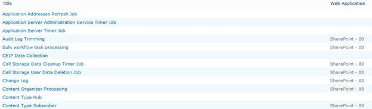
You can select each Job Definition and change the schedule or disable it.
Creating a Custom Timer Job Definition
Now we are ready with the basics to proceed with creating a Custom Timer Job.
Scenario
We have a list named Products which is custom template. Any new product arriving has to be posted to an SQL Server database so that the company website can show it to potential customers.
So the activities involved are the following:
- Create Products List inside SharePoint
- Create Product Table inside Database
- Create the Timer Job Definition
- Create Event Receiver
- Create the Database Insert method
- Deploy the Timer Job
- View the Results
(Please note that the same scenario can be done through a combination of Workflow / Events / SSS)
Step 1: Create Products List inside SharePoint
Here is the List Definition: (the list template with data is attached with the article)
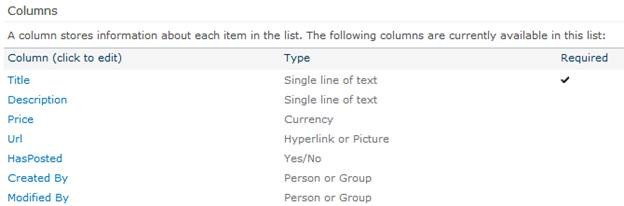
You can see that the core columns of the list are:
|
Column |
Description |
|
Title |
The name of the Product |
|
Description |
About the Product |
|
Price |
The price of the Product |
The HasPosted column determines whether the item is copied to the Products database.
After installing the list from template you will can see it is having two items:
Step 2: Create Product Table inside Database
Now we need to create the destination database and table. Following is the table definition. (The table SQL is attached with the article.)
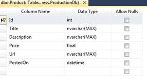
Step 3: Create the Timer Job
In this step we can go ahead and create the Timer Job. For this you require Visual Studio 2010 and the SharePoint templates installed.
Open Visual Studio and create a new Empty SharePoint Project as shown below:
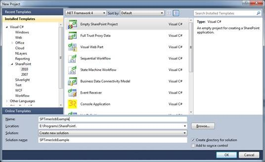
In the next page select your server and use Deploy as Farm solution option:
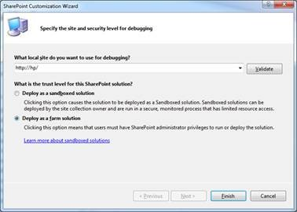
Click the Finish button after entering the options.
Now add a new class and derive it from SPJobDefinition as shown below:
using System;
using System.Collections.Generic;
using System.Linq;
using System.Text;
using Microsoft.SharePoint.Administration;
namespace SPTimerJobExample
{
public class ProductsJobDefinition : SPJobDefinition
{
}
}
Now replace the above file with the following content:
using System;
using System.Collections.Generic;
using System.Linq;
using System.Text;
using Microsoft.SharePoint.Administration;
using Microsoft.SharePoint;
namespace SPTimerJobExample
{
public class ProductsTimerJob : SPJobDefinition
{
public ProductsTimerJob()
: base()
{
}
public ProductsTimerJob(string jobName, SPService service,
SPServer server, SPJobLockType lockType)
: base(jobName, service, server, lockType)
{
this.Title = "Products Timer Job";
}
public ProductsTimerJob(string jobName, SPWebApplication webapp)
: base(jobName, webapp, null, SPJobLockType.ContentDatabase)
{
this.Title = "Products Timer Job";
}
public override void Execute(Guid targetInstanceId)
{
SPWebApplication webapp = this.Parent as SPWebApplication;
SPContentDatabase contentDb = webapp.ContentDatabases[targetInstanceId];
SPList list = contentDb.Sites[0].RootWeb.Lists["Products"];
CopyItems(list);
}
private void CopyItems(SPList list)
{
foreach (SPListItem item in list.Items)
{
bool hasPosted = (bool)item["HasPosted"];
if (!hasPosted)
{
new DbManager().Insert(item);
item["HasPosted"] = true;
item.Update();
}
}
}
}
}
The above code is performing the following activities:
- Get the list of items from Products where HasPosted is false.
- Insert the Product into database.
- Mark the item HasPosted to true.
We need to include the DbManager class file and will be done in the upcoming step.
Step 4: Create Event Receiver
Now we have to create an event receiver which performs the installation or un-installation of the Job Definition.
In the Solution Explorer right click on Feature and use the Add Feature item.
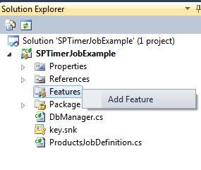
In the appearing dialog change the title to Products Job Definition and the Scope to Site.
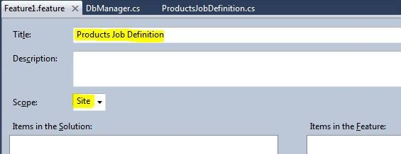
Now right click on the Solution Explorer > Feature 1 and click Add Event Receiver
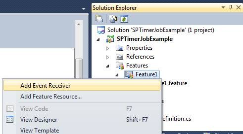
Inside the class content of Feature1.EventReceiver.cs place the following code:
const string JobName = "Products Timer Job";
public override void FeatureActivated(SPFeatureReceiverProperties properties)
{
SPSite site = properties.Feature.Parent as SPSite;
DeleteJob(site); // Delete Job if already Exists
CreateJob(site); // Create new Job
}
private static void DeleteJob(SPSite site)
{
foreach (SPJobDefinition job in site.WebApplication.JobDefinitions)
if (job.Name == JobName)
job.Delete();
}
private static void CreateJob(SPSite site)
{
ProductsTimerJob job = new ProductsTimerJob(JobName, site.WebApplication);
SPMinuteSchedule schedule = new SPMinuteSchedule();
schedule.BeginSecond = 0;
schedule.EndSecond = 5;
schedule.Interval = 5;
job.Schedule = schedule;
job.Update();
}
public override void FeatureDeactivating(SPFeatureReceiverProperties properties)
{
DeleteJob(properties.Feature.Parent as SPSite); // Delete the Job
}
You need to add the using as well:
using Microsoft.SharePoint.Administration;
Step 5: Create the Database Insert Method
In this step we can complete the DbManager class file. Here we are using Entity Framework associated with .Net 3.5 version.
For this add a new Entity Data Model into the project and map to the Product table which we have created in previous step.
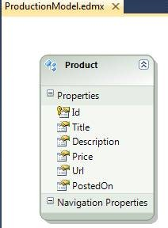
Now create a class file named DbManage.cs and replace it with the following content:
using System;
namespace SPTimerJobExample
{
public class DbManager
{
public void Insert(Microsoft.SharePoint.SPListItem item)
{
using (ProductionModel context = new ProductionModel(GetConnectionString()))
{
Product product = new Product();
product.Title = item["Title"].ToString();
product.Description = item["Description"].ToString();
product.Url = item["Url"].ToString();
product.Price = (double)item["Price"];
product.PostedOn = DateTime.Today;
context.AddToProducts(product);
context.SaveChanges();
}
}
public string GetConnectionString()
{
string connectionString = new System.Data.EntityClient.EntityConnectionStringBuilder
{
Metadata = "res://*",
Provider = "System.Data.SqlClient",
ProviderConnectionString = new System.Data.SqlClient.SqlConnectionStringBuilder
{
InitialCatalog = "YOUR-DB-NAME-HERE",
DataSource = @"YOUR-SERVER-NAME-HERE",
IntegratedSecurity = false,
UserID = "YOUR-USER-ID-HERE",
Password = "YOUR-PASSWORD-HERE",
}.ConnectionString
}.ConnectionString;
return connectionString;
}
}
}
The above code contains the Insert() method to insert new record into the Product table.
For the time being I am hard coding the connection string. You need to specify the correct user credentials in the GetConnectionString() method.
Note: Please note that the connection string is loaded from the executing application’s configuration file. In the case of Timer Jobs the configuration file will be OWSTIMER.exe.config residing in the 14hive folder.
Step 6: Deploy the Timer Job
Now we are ready to deploy the Timer Job into the SharePoint Site. For this right click on the solution and click the Deploy option.
If you get the Deploy Succeeded message we are good.
Step 7: View the Results
Now we can go to the Central Administration to see our Timer Job. For this open Central Administration web site and go to Monitoring > Review Job Definitions
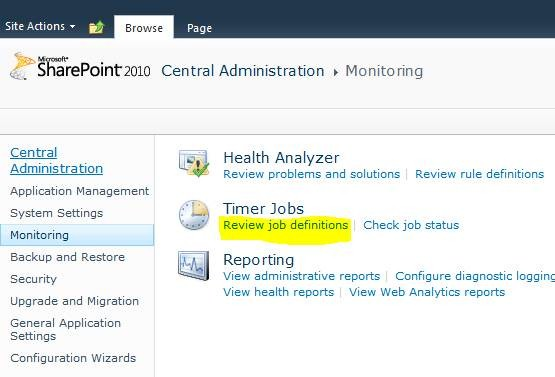
On clicking the Review Job Definitions link you can see our item as shown below:
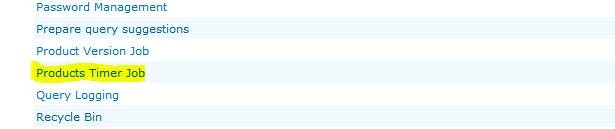
Click on the item and in the appearing page click the button Run Now
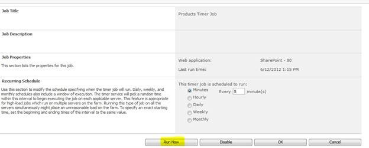
You can see that the Timer Job is set for 5 Minutes according to our code.
Now we can go back to the Products list and see that the HasPosted is set to True.
Going to the SQL Server Table we can see both the records are inserted there.
Troubleshooting Tips
While developing timer jobs, you might need to delete the assembly and feature as well. Please note the following points for troubleshooting guidance:
- Features are deployed to the 14hive folder
- The assembly gets deployed to GAC folder
- You can use RETRACT option from Visual Studio
- You can use GACUTIL to uninstall the assembly
- You can remove the Feature from 14hive folder
For troubleshooting the Farm Solutions or User Solutions you can use:
- Central Administration > System Settings > Manage Farm Solutions
- Central Administration > System Settings > Manage User Solutions
You can Retract or undo the last Retract schedule there.
For checking the Job Status or History you can use:
- Central Administration > Monitoring > Check Job Status > Timer Job Status
- Central Administration > Monitoring > Check Job Status > Timer Job History
These screens will show the Success / Failure status of the jobs and any errors associated. For example an invalid connection string problem is identified as shown below:
Debugging Tips
In some cases the Timer Service hold the old version of assembly. So the new changes you have done through Visual Studio may not get reflect immediately. You can change the assembly version and view the GAC to ensure the correct version was deployed.
Plus you can restart the SharePoint 2010 Timer Service from services.msc
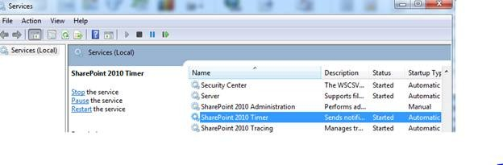
Note: In the case of Integrated Security as True in connection strings, the authenticated user would be the Service Account user assigned in the service.